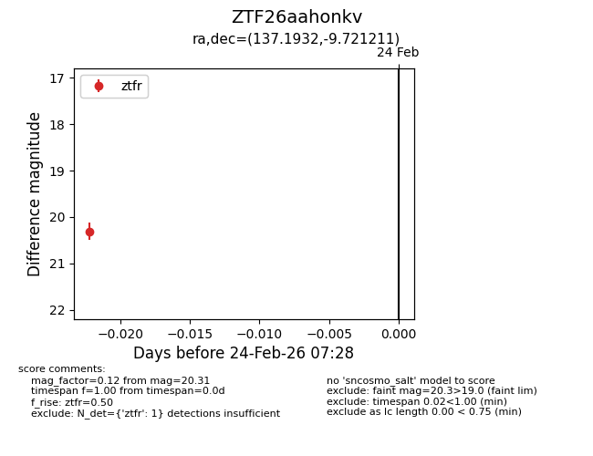
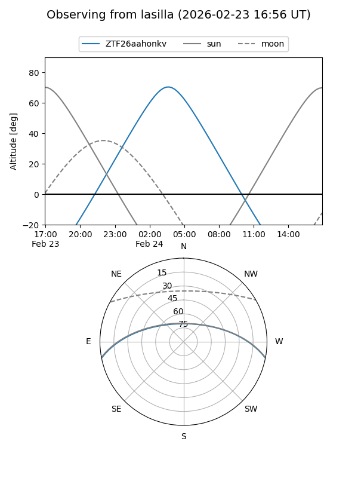
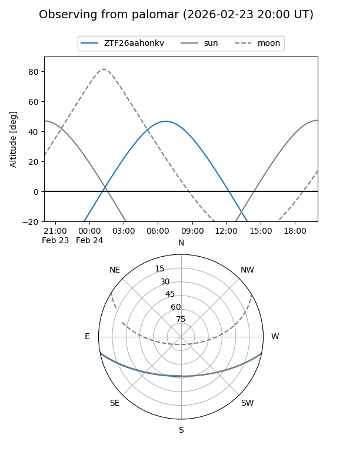

ZTF26aahonkv
Target ZTF26aahonkv at 2026-02-24 09:08
Aliases and brokers:
FINK: link
Lasair: link
ALeRCE: link
alt names
ZTF26aahonkv (ztf,fink_ztf)
Coordinates:
equatorial (ra, dec) = 137.1932,-9.72121
equatorial (HMS+DMS) = 09:08:46.38,-09:43:16.36
galactic (l, b) = (239.3171,+24.69338)
Flags:
Photometry:
last ztfr=20.31
1 ztfr detections
Lightcurve

Visibility


Additional plots